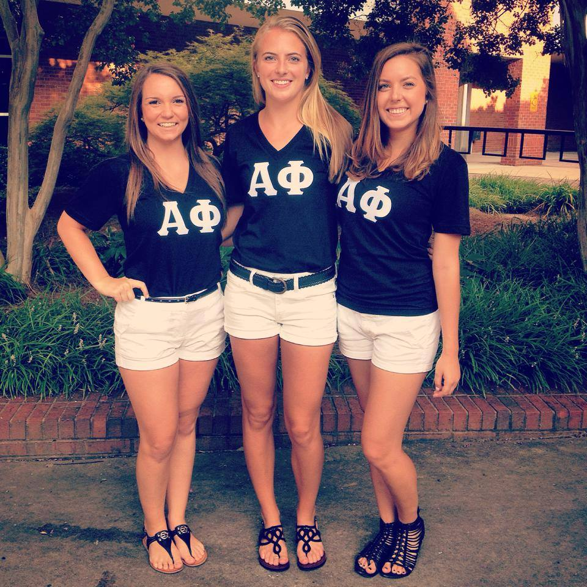
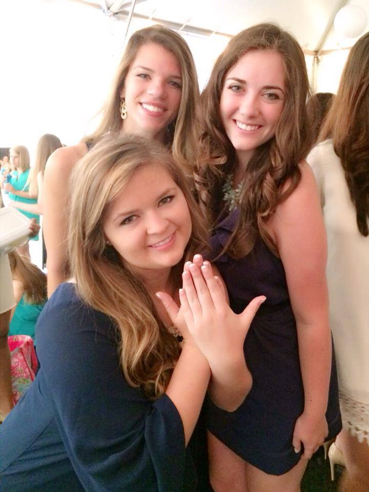
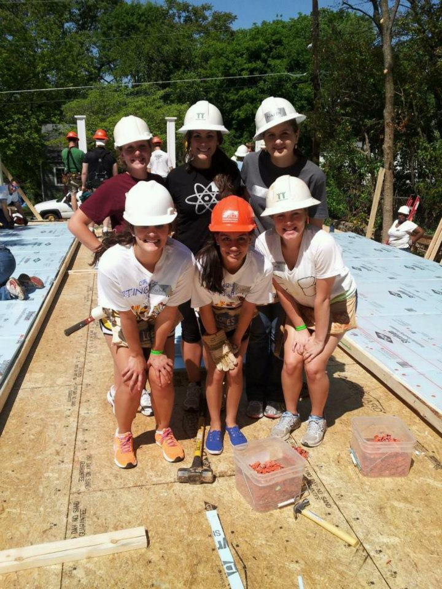
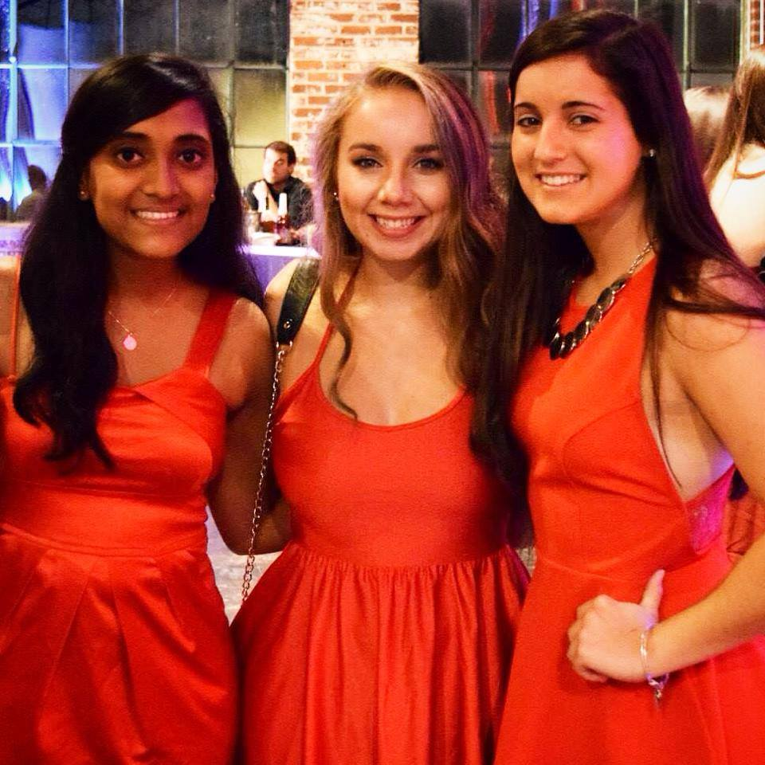

Genuine Influential Timeless
Our Sisterhood
Letter from the President
My name is Kara Hardin, and I am the current President of the Iota Mu chapter of Alpha Phi. It is truly a great honor and privilege to be representing such an amazing group of young women!
Sisters in Alpha Phi differ in areas such as hobbies, hometowns, and passions, but together we make up a group of well-rounded women who are bound by our genuine compassion for one another. Alpha Phi is truly a home away from home and a place to grow as a woman while still being able to be yourself. This sisterhood also reaches beyond just Georgia Tech. With chapters ranging from the University of Toronto to Clemson, the support of Alpha Phi is present anywhere you may travel!
When I pledged Alpha Phi, I was able to meet more than just my best friend. I met all my best friends, my entire new family, my amazing big and little, my roommates, my role-models, and, most of all, my support system. I know I could not be this happy anywhere besides Alpha Phi!
Whether you are a parent, alumni, or someone interested in Greek Life, please explore our website to see what Alpha Phi’s are about and what we’ve been up to, and do not hesitate to reach out to us!
Love, AOE, and Go Jackets!
About Alpha Phi
Alpha Phi is a sisterhood of outstanding women supporting one another in lifelong achievement. At a time when society looked upon women only as daughters, wives, and mothers—and therefore not in need of higher education—our ten founders were pioneers of the coeducational system. Attending school with the handicap of implied, if not open, opposition, our founders sought support from each other. There was a need for a social center, a place of conference, a tie which should unite, a circle of friends who could sympathize with one another in their perplexities. They formed Alpha Phi in 1872 at Syracuse University. Today, Alpha Phi continues to provide a "tie which unites, a circle of friends" for women young and old all around the world. From hand to hand and heart to heart, we are all grateful and proud of the legacy left to us by our founders.
Mission Statement
Alpha Phi International Fraternity is a membership organization dedicated to promoting sisterhood, cultivating leadership, encouraging intellectual curiosity and advocating service. Alpha Phi develops character for a lifetime. For more information, please visit the Alpha Phi International website.
Symbols
Crest - The Fraternity Crest is the Alpha Phi coat-of-arms, adopted by Convention delegates in 1922. The shield is Bordeaux with a scroll and ivy leaf above it. Inscribed on the scroll is the public motto, "Union Hand in Hand". A bar of silver crosses the shield from left to right; the upper half of the shield contains a Roman lamp in silver and the lower half, Ursa Major. The meaning of the symbols depicted on the crest is a significant part of the ritual witnessed at initiation.
Colors - Alpha Phi's original colors were blue and gold. In 1879, noting that a fraternity had colors too similar to hers, Alpha Phi adopted the more distinctive colors of silver and bordeaux.
Flowers - The flowers of Alpha Phi are the fragrant lily of the valley and the blue and gold forget-me-not.
Member Badge - The official badge of Alpha Phi was adopted in 1906. The badge is an unjeweled monogram of gold showing the symbol of Alpha superimposed upon the symbol of Phi. Inscribed in black on the symbol Phi are the letters a, o, e. The meaning of these letters is reserved for the initiation ceremony.
About Iota Mu
The Iota Mu Chapter of Alpha Phi was founded at Georgia Tech in 2008. Since then, it has made leaders, scholars and exemplary women that would go on and become leaders in their endeavors after college. While in school, however, these girls are avidly involved in different campus organizations such as GT For the Kids, FASET, GT Ambassadors, Honors Program, Student Government Association and the Honor Advisory Council to name a few. Iota Mu has established itself as a chapter of women who achieve the highest ideals in everything that we do as a genuine, influential, and timeless group of women.
Alpha Phi is excited to win 3 awards from CPC this year!
The Executive Board
Exec
Kara Hardin
President
Hometown: Augusta, Georgia
Major: BioMedical Engineering
Quote: "I have chosen to be happy because it is good for my health." -Voltaire
Email: khardin@gatech.edu
×Jesse Beardall
Vice President of Risk Management
Hometown: California
Major: Architechture
Quote: The voyage of discovery is not in seeking new landscapes but in having new eyes. Marcel Proust
Email: jbeardall3@gatech.edu
×Maria Auslander
Vice President of Programming and Education
Hometown: North Carolina
Major: Industrial Engineering
Quote: "When you really know who you are and what you like about yourself, changing for other people isn't such a big deal." -Abed Nadir (Community)
Email: mariaauslander@gatech.edu
×Manon Magill
Vice President of Recruitment
Hometown: Melbourne, Florida
Major: BioMedical Engineering
Quote: "When something bad happens you have three choices. You can either let it define
Email: jmmagill@gatech.edu
×DragonLordSue Pedapudi
Vice President of Chapter Operations
Hometown: New Jersey
Major: Industrial Engineering
Quote: "Do life in the service of compassion".
Email: spedapudi3@gatech.edu
×Jen Grigsby
Vice President of Campus Affairs
Hometown: Loganville
Major: Mechanical Engineering
Quote: """The great thing in this world is not so much where we stand as in what direction we are moving.” –Oliver Wendell Holmes, Senior"
Email: jgrigsby8@gatech.edu
×Kim O'Brien
Vice President of Marketing
Hometown: Newnan, GA
Major: Industrial Engineering
Quote: "Our biggest fear should not be of failure, but of succeeding at things in life that don't really matter." -Francis Chan
Email: kobrien9@gatech.edu
×Claire Parnell
Director of Administration
Hometown: Georgia
Major: Industrial Engineering
Quote: "Leave it Better."
Email: cparnell7@gatech.edu
×Whitney Dammann
Director of Finance
Hometown: Nashville
Major: Business
Quote: Life is what we make it, always has been, always will be. -- Anna Mary Robertson Moses
Email: wdammann3@gatech.edu
×Victoria Herdman
Panhellenic Delegate
Hometown: Lawrenceville
Major: Biology
Quote: "You can never live a perfect day without doing something for someone who can never repay you." - John Wooden
Email: vherdman1@gatech.edu
×Recruitment
Recruitment
A Letter from the Vice President of Recruitment
Hello,

My name is Manon Magill and I am proud to represent the Iota Mu Chapter of Alpha Phi as the 2015 Vice President of Membership Recruitment! I am very excited for Formal Recruitment coming up in the fall. Alpha Phi truly offers a home within Georgia Tech. I love all of my sisters and I am so thankful for the lasting friendships I have made through my time as an Alpha Phi. My sisters have helped me to become the best person that I can be. I know that my sisters will be there for me for my years at Tech and the rest of my life! All of the women of Alpha Phi, while involved in our sisterhood, keep a great balance between their academics, philanthropy, social lives, and campus involvement; all with support from their sisters. I cannot wait to meet you all during recruitment at the Alpha Phi house in the fall!
Best Wishes,
Manon Magill
Letters of Recommendation
The Recruitment team looks forward to receiving your recommendations for potential New Members. As an Alpha Phi alumna, you can download the recommendation form from the International website. We strongly encourage recommendation letters, and they can be sent from any alumna or present Alpha Phi.
Please mail recommendations to:

Alpha Phi c/o Manon Magill
171 5th Street NW
Atlanta, GA 30313
If you have any questions regarding recommendations or any other recruitment information please contact our Vice President of Recruitment or our Chapter President.
VP of Recruitment Email: jmmagill@gatech.edu
Chapter President Email: khardin3@gatech.edu
Philanthropy
Philanthropy
 The Iota Mu Chapter of Alpha Phi hosts two major Philanthropic events annually to support Alpha Phi's international philanthropy, The Alpha Phi Foundation, which supports women's heart health and promotes member development and leadership skills. Additionally, the sisters of Iota Mu participate in various volunteer opportunities on campus and around the city. Whether we’re cleaning up campus for Tech Beautification Day or helping to build new homes with Habitat for Humanity, the Alpha Phis at Georgia Tech are ready and willing to help out in the community. From Project Open Hand to Medshare to Relay For Life, there is always an Alpha Phi present to lend a hand.
Red Dress
This year, the Alpha Phis at Georgia Tech hosted their 6th Annual Red Dress Event, and their first ever Red Dress Casino Night. The event was held at the Georgia Tech Hotel on September 21st and was a huge success. Sisters dressed up in red and black and came excited for a fun-filled event. Guests in attendance enjoyed entertainment from Georgia Tech's male A Cappella group, Sympathetic Vibrations, and Seven Handle Circus, while having the chance to participate in casino games as well as bid on silent auction items put together by the sisters of Alpha Phi Iota Mu. The sisters of Alpha Phi at Georgia Tech managed to raise over $17,000 through their efforts and eagerly await to host this event again in 2014!
 King of Hearts
King of Hearts is Georgia Tech's premier all-male beauty pageant and is hosted by Georgia Tech's Alpha Phis to fund-raise for the Alpha Phi Foundation. King of Hearts participants are young men representing a variety of different organizations on campus, ranging from different fraternities to various athletic organizations, and the judges are presidents from the other sororities on campus. The entire Greek Community at Georgia Tech comes together for what is always sure to be a hilarious and entertaining event. King of Hearts is the grand finale to Healthy Heart Week, a week long event held in February, in which sisters promote awareness for Women's Heart Health. This year, the Sisters of Alpha Phi at Georgia Tech raised over $9,000 for the Alpha Phi Foundation!
Life as an Alpha Phi
Activites
The Alpha Phis at Georgia Tech pride themselves in being a part of a genuine sisterhood. Whether we are watching a movie, getting ready for formal or to go out, or headed for a long night at the library, we look for any excuse to further deepen our bond as a sisterhood.
Every Fall, each New Member attends a New Member Retreat at an amazing weekend getaway spot to immediately get to know their pledge sisters. After a few weeks of being a member and a whole week of revelation presents, we host Big Little Reveal on Tech Green. The bond between a Big Sister and Little Sister is something so special - a Big is not only your friend, but your mentor and biggest fan.
To strengthen the bond between our sisterhood as a whole, Alpha Phi hosts many sisterhood events throughout the semester. In the Fall, we can be found picking pumpkins and getting lost in the corn maze during our annual farm day, and in the Spring, we host an overnight sisterhood retreat for the entire sorority to bond on an even deeper level. In addition to these big events, each week a different sister will host "Sisterhood Saturday" at the house and plan a fun activity for a smaller group of sisters. We've done everything from making chocolate covered strawberries to decorating mason jars!
We truly value each and every sister that makes up our unique and diverese sisterhood. Sisters are those who know all about you and love you anyways, and no matter where we find an Alpha Phi, we find a friend.
At Georgia Tech, every student is inclined to suceed academically. Alpha Phi offers many resources through it's scholarship program to ensure that every sister is supported in her academic needs. From our study rooms, major support groups, and sisters helping one another, Alpha Phi provides a foundation to suceed in the classrom. Each week, sisters are rewarded for not skipping class and for recieving good grades on exams. Outstanding scholarship is also recognized at the end of every semester at our scholarship banquet. College is a balancing act, and Alpha Phi provides an environment to aid sisters to acheieve in the classroom.
Alpha Phi's are also successful in the workforce! Below are some of the companies sisters have worked for in the past:
Apple Inc.
Delta
General Mills
Boeing
Disney
Insightpool
Coca-Cola
John Deere
Kimberly Clark
Deloitte
Equifax
Bard Medical
Make-A-Wish
Siemens
UPS
Caterpiller
Wayerhaueser
St. Jude Medical
NASA
GE
Bank of America
Capital One
Home Depot
Anheuser Busch
Southern Company
Shell
Turner Broadcasting
McKesson
Accenture
Target
SunTrust
Caphlon
Proctor and Gamble
SpaceX
ExxonMobil
Remington Medical
Google
AIESIC
Keurig
HD Supply
IBM
Abott Labs
MTU America
Bain & Company
United Airways
Codeguard
Carter Center
Tidbits LLC
From Bid Day on, Alpha Phi’s never have a shortage of socials to attend! Each Fall we host our annual “Woodser” at Sweetwater Brewery in Atlanta with a live country band. Sisters can be seen swing dancing while decked out in plaid. Several date nights are also held multiple times each semester at places like the Atlanta Fair, Braves Games, and Malibu Grand Prix. In the Spring, we host Senior Party as a last goodbye to our graduating sisters. On top of all of this, each semester we have mixers with several different fraternities in order to get to know other chapters on campus. Recent themes include Great Gatsphi, Toga Party, Loggers and Joggers, and Throwback Thursday. However, the events that everyone looks most forward to are Semiformal in the Fall and Formal in the Spring. Sisters and their dates get dressed up in their best attire and go to gorgeous venues like The Fox Theatre for the evening to dance the night away. Each event is unique and a great opportunity to bond with sisters and friends while making memories that will last a lifetime.
Our chapter is nothing without the support of our parents. Whether they're supporting us by attending our philanthropic events or cheering us up through care packages during our toughest weeks at school, the parents of our Alpha Phi sisters are the backbone to our organization. We try to show our thanks by keeping in touch with our parents throughout the year as well as sending out monthly newsletters with what is happening within Alpha Phi.
Every year, the Alpha Phis at Georgia Tech show their appreciation for their moms by hosting a Mother Daughter Tea. The tea is hosted during Georgia Tech Parents' Weekend and is a sophisticated event in which mothers and daughters mingle with each other over an elegant course of tea and pastries.
Alpha Phi's are also big fans of their fathers and they express their appreciation for their dads by hosting an annual trip to a sporting event. This past year's Daddy Daughter event took place at a Georgia Tech baseball game and this year will be attending an Atlanta Braves games!